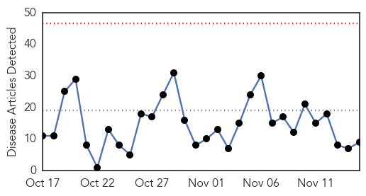
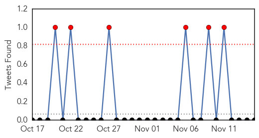
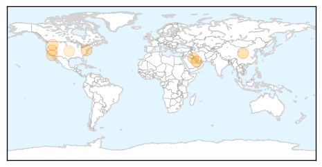
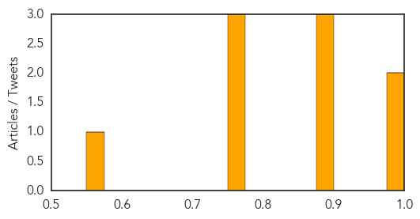

Toggle navigation
Early Warning
Daily Alerts
Influenza
Nov 15, 2015
Compare to:
-
Dengue Fever
Hemmorhagic Fever
Mold/Fungal Infection
Meningitis
Pertussis / Whooping Cough
Middle East Respiratory Syndrome
Cholera
Hepatitis
Chikungunya
Yellow Fever
Bubonic Plague
West Nile Virus
Swine Flu
Ebola
Measles
Unknown
Mumps
30 Day Trends
Web: 0
alerts
, 0
warnings
Twitter: 6
alerts
, 0
warnings
Top Articles:
0.998
SCH rules out epidemic threat of seasonal influenza virus
0.996
Andover Public Health Officials Reminding Residents to Get...
0.890
Concerns Rise Over Scientists Tests on SARS 2.0
0.885
Five Myths About the Common Cold
0.882
Kuwait- Seasonal flu infection rate at normal average: MoH - Defense Ministry intends to cut overseas treatment cases
0.751
November 15, 2015 Archives
0.751
November 15, 2015 Archives
0.751
November 14, 2015 Archives
0.559
Surry County Health and Nutrition Center offering free flu shots
Top Tweets:
No tweets found for Nov 15, 2015
Web/News Articles

Tweets

Article Locations

Article Confidences
